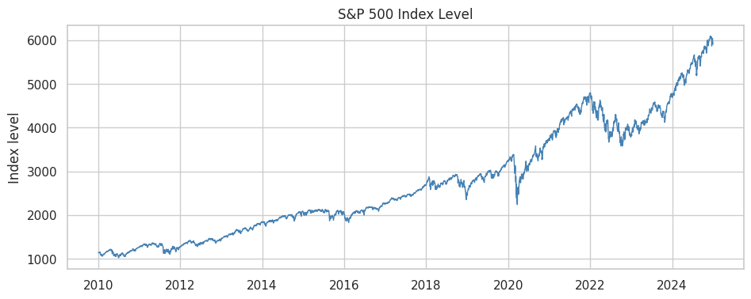
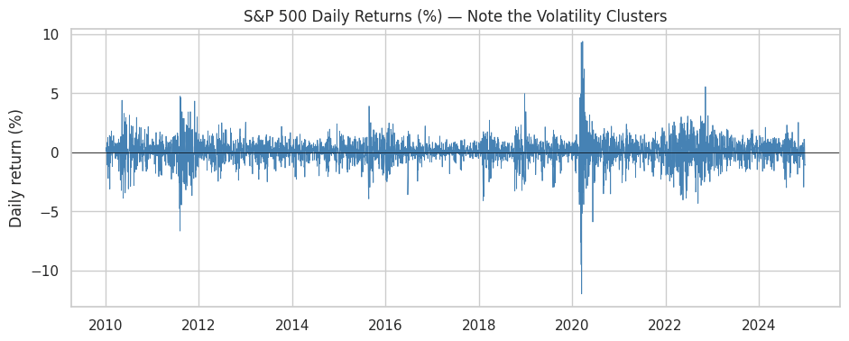
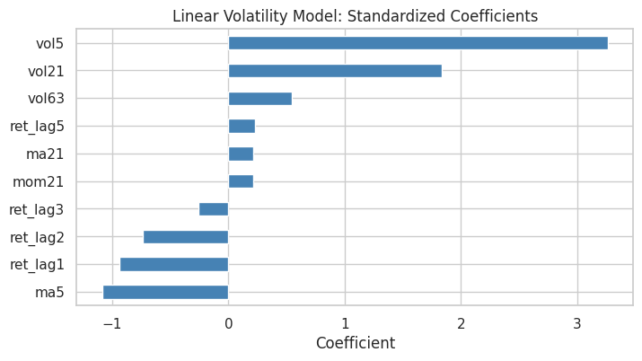
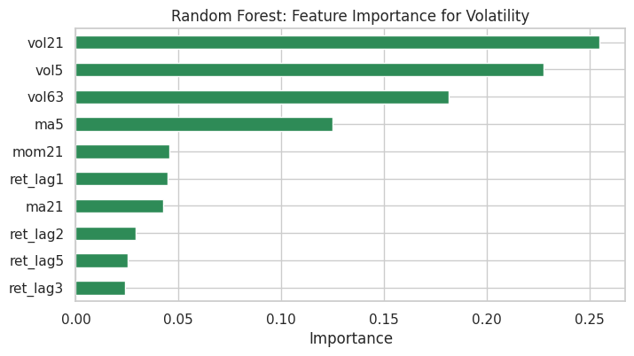
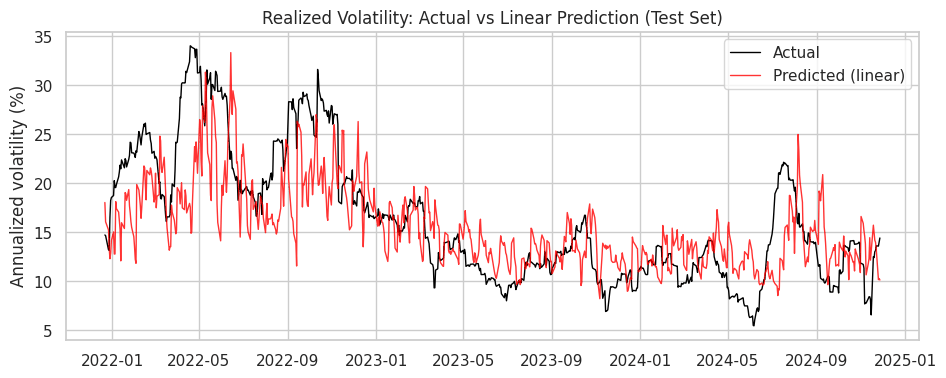
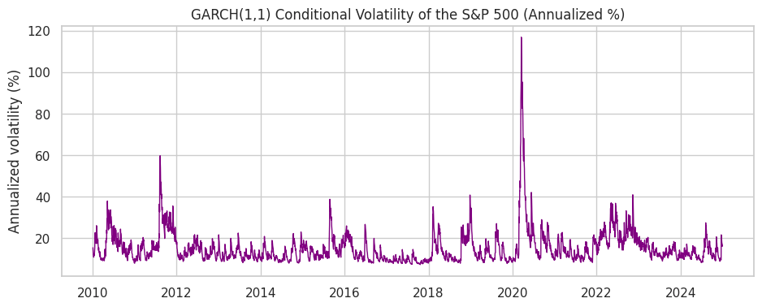
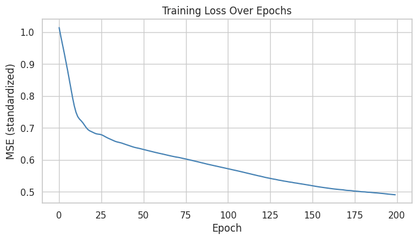
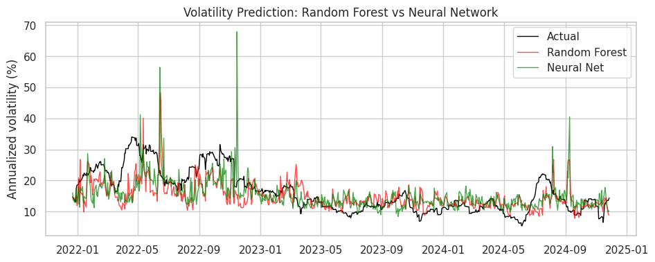

Lecture 8 was about inference: estimating relationships and testing whether they're real.
This lecture is about prediction: building models that forecast well on data they haven't seen.
In inference we care about coefficients and standard errors; in prediction we care about out-of-sample accuracy.
A model can be good for one goal and poor for the other, so we evaluate the two separately.
What We'll Cover
Ch 19 (scikit-learn): the machine-learning workflow, including train/test splits, regularization, cross-validation, pipelines, and tree-based models.
Ch 20 (PyTorch): a first, exposure-level look at deep learning, covering tensors, autograd, and the training loop.
The running example is forecasting the S&P 500.
- Returns are hard to predict because markets are close to efficient.
- Volatility is much easier to predict because it clusters. This connects to the GARCH model from Lecture 8.
Leakage and Out-of-Sample Evaluation
It is easy to appear to predict markets by accidentally letting future information leak into the features, or by reporting in-sample fit.
We follow two rules throughout:
- No look-ahead: every feature uses only past data.
- Out-of-sample evaluation: we judge models on a held-out test period, in chronological order.
Setup: Installing and Importing Libraries
scikit-learn,numpy,pandas, andtorchare pre-installed in Colab.- We install
yfinance(to download prices) andarch(for the GARCH comparison).
!pip install -q yfinance archimport numpy as np
import pandas as pd
import matplotlib.pyplot as plt
import seaborn as sns
sns.set_theme(style='whitegrid')Loading S&P 500 Data
- We download daily S&P 500 prices. The loader below tries
yfinancefirst and falls back to Stooq and then FRED, so the notebook still works if one source is down.
import warnings
def load_sp500(start='2010-01-01', end='2024-12-31'):
"""Load daily S&P 500 closing prices. Tries yfinance, then Stooq, then FRED."""
# 1) yfinance — the standard tool for market data
try:
import yfinance as yf
data = yf.download('^GSPC', start=start, end=end,
progress=False, auto_adjust=True)
if len(data) > 0:
close = data['Close']
if isinstance(close, pd.DataFrame): # newer yfinance returns MultiIndex cols
close = close.iloc[:, 0]
return close.rename('SP500').dropna()
except Exception as e:
print(f"yfinance failed ({type(e).__name__}); trying Stooq.")
# 2) Stooq via pandas-datareader (reliable, no API key)
try:
import pandas_datareader.data as web
with warnings.catch_warnings():
warnings.simplefilter('ignore', FutureWarning)
data = web.DataReader('^SPX', 'stooq', start=start, end=end)
return data['Close'].sort_index().rename('SP500').dropna()
except Exception as e:
print(f"Stooq failed ({type(e).__name__}); trying FRED.")
# 3) FRED (closing price only, ~10 years of history)
import pandas_datareader.data as web
with warnings.catch_warnings():
warnings.simplefilter('ignore', FutureWarning)
data = web.DataReader('SP500', 'fred', start=start, end=end)
return data['SP500'].dropna().rename('SP500')sp500 = load_sp500()
sp500.tail()| SP500 | |
|---|---|
| Date | |
| 2024-12-23 | 5974.069824 |
| 2024-12-24 | 6040.040039 |
| 2024-12-26 | 6037.589844 |
| 2024-12-27 | 5970.839844 |
| 2024-12-30 | 5906.939941 |
print(f"Observations: {len(sp500)}")
print(f"Date range: {sp500.index.min():%Y-%m-%d} to {sp500.index.max():%Y-%m-%d}")Observations: 3773 Date range: 2010-01-04 to 2024-12-30
Visualizing the Price Series
fig, ax = plt.subplots(figsize=(11, 4))
ax.plot(sp500.index, sp500, color='steelblue', linewidth=1)
ax.set_title('S&P 500 Index Level')
ax.set_ylabel('Index level')
plt.show()
From Prices to Returns
We model returns rather than price levels. A price series is non-stationary (it trends and wanders), and predicting tomorrow's price is nearly trivial because it is close to today's.
Daily returns are roughly stationary and are the quantity we care about.
returns = sp500.pct_change().dropna()
returns.head()| SP500 | |
|---|---|
| Date | |
| 2010-01-05 | 0.003116 |
| 2010-01-06 | 0.000546 |
| 2010-01-07 | 0.004001 |
| 2010-01-08 | 0.002882 |
| 2010-01-11 | 0.001747 |
fig, ax = plt.subplots(figsize=(11, 4))
ax.plot(returns.index, returns * 100, color='steelblue', linewidth=0.6)
ax.axhline(0, color='black', linewidth=0.5)
ax.set_title('S&P 500 Daily Returns (%) — Note the Volatility Clusters')
ax.set_ylabel('Daily return (%)')
plt.show()
- The return series shows volatility clustering: calm stretches and turbulent stretches group together. We use this later to forecast volatility.
Ch 19: Machine Learning with scikit-learn
scikit-learnis the standard Python library for machine learning.Every model follows the same estimator API:
model.fit(X, y)learns from training data.model.predict(X)makes predictions.model.score(X, y)evaluates performance.
This consistency means swapping a linear model for a random forest is a one-line change.
The Machine-Learning Workflow
- The steps are almost always the same:
- Build features (
X) and a target (y). - Split into training and test sets.
- Fit a model on the training set.
- Evaluate on the held-out test set.
- Tune with cross-validation, then re-evaluate.
- Build features (
Feature Engineering
Models learn from features. From a single return series we can build many predictive inputs.
Every feature must use only past information. We
shifteach series so that today's feature never uses today's or tomorrow's return.
data = pd.DataFrame({'ret': returns})
# Lagged returns: yesterday's, 2 days ago, etc.
for k in [1, 2, 3, 5]:
data[f'ret_lag{k}'] = data['ret'].shift(k)
data.head()| ret | ret_lag1 | ret_lag2 | ret_lag3 | ret_lag5 | |
|---|---|---|---|---|---|
| Date | |||||
| 2010-01-05 | 0.003116 | NaN | NaN | NaN | NaN |
| 2010-01-06 | 0.000546 | 0.003116 | NaN | NaN | NaN |
| 2010-01-07 | 0.004001 | 0.000546 | 0.003116 | NaN | NaN |
| 2010-01-08 | 0.002882 | 0.004001 | 0.000546 | 0.003116 | NaN |
| 2010-01-11 | 0.001747 | 0.002882 | 0.004001 | 0.000546 | NaN |
Moving Averages and Momentum
- Short- and medium-term average returns, plus 21-day momentum (about one trading month).
data['ma5'] = data['ret'].rolling(5).mean().shift(1)
data['ma21'] = data['ret'].rolling(21).mean().shift(1)
data['mom21'] = data['ret'].rolling(21).sum().shift(1)
data[['ma5', 'ma21', 'mom21']].head(8)| ma5 | ma21 | mom21 | |
|---|---|---|---|
| Date | |||
| 2010-01-05 | NaN | NaN | NaN |
| 2010-01-06 | NaN | NaN | NaN |
| 2010-01-07 | NaN | NaN | NaN |
| 2010-01-08 | NaN | NaN | NaN |
| 2010-01-11 | NaN | NaN | NaN |
| 2010-01-12 | 0.002458 | NaN | NaN |
| 2010-01-13 | -0.000041 | NaN | NaN |
| 2010-01-14 | 0.001515 | NaN | NaN |
Volatility Features (HAR-style)
Past realized volatility at several horizons (5, 21, and 63 days). These are the standard predictors of future volatility.
We annualize and convert to percent (multiply by sqrt(252) and by 100) so the numbers are easier to read.
ANN = np.sqrt(252) * 100 # annualize daily vol to percent
data['vol5'] = data['ret'].rolling(5).std().shift(1) * ANN
data['vol21'] = data['ret'].rolling(21).std().shift(1) * ANN
data['vol63'] = data['ret'].rolling(63).std().shift(1) * ANN
data[['vol5', 'vol21', 'vol63']].head(8)| vol5 | vol21 | vol63 | |
|---|---|---|---|
| Date | |||
| 2010-01-05 | NaN | NaN | NaN |
| 2010-01-06 | NaN | NaN | NaN |
| 2010-01-07 | NaN | NaN | NaN |
| 2010-01-08 | NaN | NaN | NaN |
| 2010-01-11 | NaN | NaN | NaN |
| 2010-01-12 | 2.123419 | NaN | NaN |
| 2010-01-13 | 8.536166 | NaN | NaN |
| 2010-01-14 | 10.446403 | NaN | NaN |
Defining the Targets
- Return target: tomorrow's return (
shift(-1)). - Direction target: whether tomorrow is up (1) or down (0).
- Volatility target: realized volatility over the next 21 days, annualized.
data['target_ret'] = data['ret'].shift(-1)
data['target_dir'] = (data['target_ret'] > 0).astype(int)
data['target_vol'] = data['ret'].rolling(21).std().shift(-21) * ANN
# Drop rows with missing values created by shifting/rolling
data = data.dropna()
print(f"Final dataset shape: {data.shape}")
data.head()Final dataset shape: (3688, 14)
| ret | ret_lag1 | ret_lag2 | ret_lag3 | ret_lag5 | ma5 | ma21 | mom21 | vol5 | vol21 | vol63 | target_ret | target_dir | target_vol | |
|---|---|---|---|---|---|---|---|---|---|---|---|---|---|---|
| Date | ||||||||||||||
| 2010-04-07 | -0.005877 | 0.001684 | 0.007928 | 0.007414 | 0.000043 | 0.002759 | 0.002086 | 0.043812 | 7.666855 | 6.580531 | 13.997103 | 0.003374 | 1 | 20.611468 |
| 2010-04-08 | 0.003374 | -0.005877 | 0.001684 | 0.007928 | -0.003273 | 0.001575 | 0.001815 | 0.038111 | 9.833674 | 7.103050 | 14.052344 | 0.006684 | 1 | 20.992509 |
| 2010-04-09 | 0.006684 | 0.003374 | -0.005877 | 0.001684 | 0.007414 | 0.002905 | 0.001894 | 0.039773 | 8.852387 | 7.123335 | 14.062729 | 0.001767 | 1 | 26.438090 |
| 2010-04-12 | 0.001767 | 0.006684 | 0.003374 | -0.005877 | 0.007928 | 0.002759 | 0.001997 | 0.041932 | 8.630552 | 7.261742 | 14.098417 | 0.000685 | 1 | 26.423899 |
| 2010-04-13 | 0.000685 | 0.001767 | 0.006684 | 0.003374 | 0.001684 | 0.001526 | 0.001888 | 0.039657 | 7.313627 | 7.223691 | 14.093344 | 0.011150 | 1 | 26.942706 |
# The list of feature columns we'll feed to models
feature_cols = ['ret_lag1', 'ret_lag2', 'ret_lag3', 'ret_lag5',
'ma5', 'ma21', 'mom21', 'vol5', 'vol21', 'vol63']
print(feature_cols)['ret_lag1', 'ret_lag2', 'ret_lag3', 'ret_lag5', 'ma5', 'ma21', 'mom21', 'vol5', 'vol21', 'vol63']
Train/Test Split for Time Series
For time series, the train/test split must be chronological, never random.
A random split would let the model train on future days and predict past days. This is called look-ahead leakage; it makes results look good, but they could not have been achieved in real time.
We train on the first 80% of the timeline and test on the last 20%.
split = int(len(data) * 0.8)
train = data.iloc[:split]
test = data.iloc[split:]
print(f"Train: {train.index.min():%Y-%m} to {train.index.max():%Y-%m} ({len(train)} days)")
print(f"Test: {test.index.min():%Y-%m} to {test.index.max():%Y-%m} ({len(test)} days)")Train: 2010-04 to 2021-12 (2950 days) Test: 2021-12 to 2024-11 (738 days)
Note: we do not use scikit-learn's train_test_split here.
train_test_splitshuffles by default. That is fine for cross-sectional data but wrong for time series.- We slice by position instead.
Predicting Returns
- We first try to predict tomorrow's return with a linear model, using the estimator API.
from sklearn.linear_model import LinearRegression
from sklearn.metrics import r2_score
X_train, y_train = train[feature_cols], train['target_ret']
X_test, y_test = test[feature_cols], test['target_ret']
lr = LinearRegression()
lr.fit(X_train, y_train)LinearRegression()
train_r2 = lr.score(X_train, y_train)
test_r2 = r2_score(y_test, lr.predict(X_test))
print(f"In-sample R2: {train_r2:.4f}")
print(f"Out-of-sample R2: {test_r2:.4f}")In-sample R2: 0.0305 Out-of-sample R2: -0.0297
Results
The out-of-sample R-squared is essentially zero (often slightly negative).
This is expected under the efficient-market hypothesis. If daily returns were easily predictable from past returns, traders would already have arbitraged the pattern away.
A negative test R-squared means the model does worse than predicting the mean. Be skeptical of anyone claiming to predict daily returns with high accuracy.
Regularization: Ridge and Lasso
Regularization shrinks coefficients toward zero to reduce overfitting. This connects directly to OLS from Lecture 8.
Ridge (L2) shrinks all coefficients smoothly.
Lasso (L1) can set some coefficients exactly to zero, so it also performs variable selection.
from sklearn.linear_model import Ridge, Lasso
ridge = Ridge(alpha=1.0).fit(X_train, y_train)
lasso = Lasso(alpha=0.001).fit(X_train, y_train)
coefs = pd.DataFrame({
'OLS': lr.coef_,
'Ridge': ridge.coef_,
'Lasso': lasso.coef_,
}, index=feature_cols)
coefs.round(5)| OLS | Ridge | Lasso | |
|---|---|---|---|
| ret_lag1 | 0.12904 | 0.02648 | 0.00000 |
| ret_lag2 | -0.00400 | -0.00879 | -0.00000 |
| ret_lag3 | -0.03717 | -0.01388 | -0.00000 |
| ret_lag5 | -0.07652 | -0.02563 | -0.00000 |
| ma5 | -0.14649 | -0.00484 | -0.00000 |
| ma21 | -0.00076 | -0.00059 | -0.00000 |
| mom21 | -0.01601 | -0.01235 | -0.00000 |
| vol5 | -0.00014 | -0.00008 | -0.00000 |
| vol21 | 0.00006 | 0.00003 | 0.00000 |
| vol63 | 0.00011 | 0.00009 | 0.00004 |
- Lasso sets many coefficients to zero. When predicting returns it typically keeps almost no features, which matches the near-zero out-of-sample R-squared of the linear model.
Choosing alpha with Cross-Validation
LassoCVautomatically selects the regularization strength using cross-validation.
from sklearn.linear_model import LassoCV
from sklearn.model_selection import TimeSeriesSplit
lasso_cv = LassoCV(cv=TimeSeriesSplit(5), max_iter=50000)
lasso_cv.fit(X_train, y_train)
print(f"Selected alpha: {lasso_cv.alpha_:.2e}")
print(f"Non-zero coefficients: {np.sum(lasso_cv.coef_ != 0)} of {len(feature_cols)}")Selected alpha: 2.89e-03 Non-zero coefficients: 1 of 10
Cross-Validation for Time Series
Ordinary k-fold CV ignores the time order of the data, which is again wrong for time series.
TimeSeriesSplitcreates folds that always train on the past and validate on the future.
from sklearn.model_selection import cross_val_score
tscv = TimeSeriesSplit(n_splits=5)
scores = cross_val_score(LinearRegression(), X_train, y_train,
cv=tscv, scoring='r2')
print("Validation R2 per fold:", np.round(scores, 4))
print(f"Mean: {scores.mean():.4f}")Validation R2 per fold: [-0.0505 -0.0199 -0.054 -0.0074 -0.0163] Mean: -0.0296
- Each fold's validation set comes after its training set in time. The validation R-squared is near zero in every fold, as it was on the test set.
Preprocessing Pipelines
Many models need scaled features. The scaling must be learned on the training set only; otherwise test information leaks in.
A
Pipelinebundles preprocessing and the model so the scaler is fit on each training fold automatically.
from sklearn.pipeline import make_pipeline
from sklearn.preprocessing import StandardScaler
pipe = make_pipeline(StandardScaler(), Ridge(alpha=1.0))
pipe.fit(X_train, y_train)
print(f"Pipeline test R2: {pipe.score(X_test, y_test):.4f}")Pipeline test R2: -0.0296
- The
PipelineappliesStandardScalerand thenRidgeas one object, so there is no manual scaling step and the scaler is fit only on the training data.
Tree-Based Models
Decision trees split the feature space into regions. They capture nonlinearities and interactions automatically.
Random forests average many trees fit on bootstrapped samples. They are usually more accurate and more stable than a single tree.
Gradient boosting builds trees sequentially, with each new tree correcting the errors of the trees before it. It is often the best performer on tabular data.
from sklearn.ensemble import RandomForestRegressor, GradientBoostingRegressor
rf = RandomForestRegressor(n_estimators=200, random_state=42)
rf.fit(X_train, y_train)
print(f"Random Forest (returns) test R2: {rf.score(X_test, y_test):.4f}")Random Forest (returns) test R2: -0.0579
- The random forest does not predict returns out of sample either. A more flexible model cannot find signal that is not in the data.
Classification: Predicting Direction
Next we check whether the sign of tomorrow's return is easier to predict than its magnitude.
This is a classification problem (up vs down). We measure accuracy, the fraction of days classified correctly.
from sklearn.linear_model import LogisticRegression
from sklearn.metrics import accuracy_score, confusion_matrix
yd_train, yd_test = train['target_dir'], test['target_dir']
clf = make_pipeline(StandardScaler(), LogisticRegression(max_iter=1000))
clf.fit(X_train, yd_train)
acc = accuracy_score(yd_test, clf.predict(X_test))
print(f"Direction accuracy: {acc:.4f}")
print(f"Baseline (always predict 'up'): {yd_test.mean():.4f}")Direction accuracy: 0.5149 Baseline (always predict 'up'): 0.5176
Reading a Confusion Matrix
- The confusion matrix shows correct vs incorrect calls for each class.
cm = confusion_matrix(yd_test, clf.predict(X_test))
cm_df = pd.DataFrame(cm,
index=['Actual Down', 'Actual Up'],
columns=['Pred Down', 'Pred Up'])
cm_df| Pred Down | Pred Up | |
|---|---|---|
| Actual Down | 8 | 348 |
| Actual Up | 10 | 372 |
- Accuracy is close to the base rate (always predicting up), so direction prediction is barely better than a coin flip. As with returns, this is consistent with market efficiency.
Predicting Volatility
Volatility clusters, so next month's volatility is predictable from the recent past.
We keep the same features and workflow and change the target to
target_vol.The standard model for forecasting realized volatility, the HAR model, is a linear regression of future volatility on past volatility at several horizons. We start there.
yv_train, yv_test = train['target_vol'], test['target_vol']
# A regularized linear model (HAR-style), in a pipeline with scaling
vol_lin = make_pipeline(StandardScaler(), Ridge(alpha=1.0))
vol_lin.fit(X_train, yv_train)
vol_r2 = vol_lin.score(X_test, yv_test)
print(f"Volatility test R2 (linear): {vol_r2:.4f}")
print("(Compare to the near-zero R2 for returns!)")Volatility test R2 (linear): 0.4452 (Compare to the near-zero R2 for returns!)
Comparison with Returns
The test R-squared is much higher than for returns.
More generally, financial returns are hard to forecast, while volatility is often forecastable.
Linear Model Coefficients
- In a linear model with standardized features, the coefficients show which features drive the forecast. We expect the past-volatility features to dominate.
# Pull coefficients out of the fitted pipeline
ridge_step = vol_lin.named_steps['ridge']
vol_coefs = pd.Series(ridge_step.coef_, index=feature_cols).sort_values()
fig, ax = plt.subplots(figsize=(8, 4))
vol_coefs.plot.barh(ax=ax, color='steelblue')
ax.set_title('Linear Volatility Model: Standardized Coefficients')
ax.set_xlabel('Coefficient')
plt.show()
Random Forest for Volatility
A random forest can also predict volatility, and it reports feature importances.
Trees cannot extrapolate. Their predictions stay within the range of target values seen in training, so if a future crisis brings higher volatility than anything in the training data, a tree will systematically under-predict it. A linear model can extrapolate.
rf_vol = RandomForestRegressor(n_estimators=200, random_state=42)
rf_vol.fit(X_train, yv_train)
print(f"Volatility test R2 (random forest): {rf_vol.score(X_test, yv_test):.4f}")
importances = pd.Series(rf_vol.feature_importances_, index=feature_cols).sort_values()
fig, ax = plt.subplots(figsize=(8, 4))
importances.plot.barh(ax=ax, color='seagreen')
ax.set_title('Random Forest: Feature Importance for Volatility')
ax.set_xlabel('Importance')
plt.show()Volatility test R2 (random forest): 0.1972

Visualizing the Volatility Forecast
- Plot predicted vs actual volatility on the test set for the linear model.
pred_vol = vol_lin.predict(X_test)
fig, ax = plt.subplots(figsize=(11, 4))
ax.plot(yv_test.index, yv_test, label='Actual', color='black', linewidth=1)
ax.plot(yv_test.index, pred_vol, label='Predicted (linear)', color='red', linewidth=1, alpha=0.8)
ax.set_title('Realized Volatility: Actual vs Linear Prediction (Test Set)')
ax.set_ylabel('Annualized volatility (%)')
ax.legend()
plt.show()
Connection to GARCH
In Lecture 8 we modeled volatility structurally with GARCH. Here we predicted it with a data-driven ML model.
We now fit a GARCH(1,1) to the S&P 500 returns and compare its conditional volatility with the market's actual ups and downs.
from arch import arch_model
# arch expects returns in percent; daily returns are tiny, so scale by 100
am = arch_model(returns * 100, mean='Constant', vol='GARCH', p=1, q=1)
garch_res = am.fit(disp='off')
# Annualize the daily conditional volatility to compare with our ML target
garch_vol = garch_res.conditional_volatility * np.sqrt(252)
garch_vol.tail()| cond_vol | |
|---|---|
| Date | |
| 2024-12-23 | 18.959831 |
| 2024-12-24 | 17.759772 |
| 2024-12-26 | 17.494834 |
| 2024-12-27 | 15.992890 |
| 2024-12-30 | 16.534878 |
fig, ax = plt.subplots(figsize=(11, 4))
ax.plot(garch_vol.index, garch_vol, color='purple', linewidth=1)
ax.set_title('GARCH(1,1) Conditional Volatility of the S&P 500 (Annualized %)')
ax.set_ylabel('Annualized volatility (%)')
plt.show()
GARCH is a parametric model with three parameters and strong structure. The random forest is flexible and makes few assumptions.
Both capture the fact that volatility is persistent and forecastable. GARCH reflects the inference approach and the random forest reflects the prediction approach.
In-Class Exercise
19-1. Add a Feature:
- Add a new feature to
datacalledret_lag10(the return 10 days ago). - Use
.shift(10)and confirm it appears as a column.
19-2. Random Forest for Returns:
- Fit a
RandomForestRegressorto predicttarget_ret(tomorrow's return) usingfeature_cols. - Report the out-of-sample R-squared. Is it meaningfully above zero?
19-3. Regularization Path:
- Fit
Lassoto predicttarget_retwith three differentalphavalues: 0.0001, 0.001, and 0.01. - For each, print how many coefficients are non-zero. What happens as
alphagrows?
19-4. Gradient Boosting for Volatility:
- Fit a
GradientBoostingRegressorto predicttarget_vol. - Compare its test R-squared to the random forest's. Which does better?
19-5. Feature Importance:
- From your volatility model in 19-4 (or the random forest), print the three most important features.
- Do the volatility features (
vol5,vol21,vol63) dominate, as expected?
Ch 20: Deep Learning with PyTorch
PyTorch is one of the two dominant deep-learning frameworks (alongside TensorFlow).
This chapter gives an exposure-level introduction to tensors, automatic differentiation, and the training loop.
For tabular econ/finance problems, gradient boosting (Ch 19) usually performs better than deep learning. Deep learning is most useful for images, text, and sequences, and for very large datasets.
import torch
import torch.nn as nn
print(f"PyTorch version: {torch.__version__}")PyTorch version: 2.11.0+cpu
Tensors
A tensor is PyTorch's core data structure. It is essentially a NumPy array that can run on a GPU and track gradients.
If you know NumPy (Lecture 6), you already know most of the tensor API.
# Create tensors much like NumPy arrays
a = torch.tensor([1.0, 2.0, 3.0])
b = torch.tensor([4.0, 5.0, 6.0])
print(a + b)
print(a * b)
print(a.mean())tensor([5., 7., 9.]) tensor([ 4., 10., 18.]) tensor(2.)
# 2D tensor and its shape
M = torch.tensor([[1.0, 2.0], [3.0, 4.0]])
print(M)
print("Shape:", M.shape)tensor([[1., 2.],
[3., 4.]])
Shape: torch.Size([2, 2])
Converting Between NumPy and PyTorch
torch.from_numpy()converts a NumPy array to a tensor, and.numpy()converts a tensor back to a NumPy array.
arr = np.array([1.0, 2.0, 3.0])
t = torch.from_numpy(arr) # NumPy -> tensor
back = t.numpy() # tensor -> NumPy
print("tensor:", t)
print("back to numpy:", back)tensor: tensor([1., 2., 3.], dtype=torch.float64) back to numpy: [1. 2. 3.]
Autograd: Automatic Differentiation
Neural networks are trained by gradient descent, and the gradients can be tedious to derive by hand.
PyTorch's autograd computes them automatically. Set
requires_grad=True, do a calculation, then call.backward().
# Compute the derivative of f(x) = x^2 + 2x at x = 3
x = torch.tensor(3.0, requires_grad=True)
y = x**2 + 2*x
y.backward() # compute dy/dx
print(f"dy/dx at x=3: {x.grad.item()}") # analytically 2x + 2 = 8dy/dx at x=3: 8.0
- Network training relies on autograd: PyTorch tracks every operation and can differentiate the whole chain back to the parameters.
Building a Neural Network
A neural network is a stack of linear layers with nonlinear activations in between.
In PyTorch you define one as a class that subclasses
nn.Module(classes were covered in Lecture 5). You implement__init__(define the layers) andforward(define the computation).
class VolNet(nn.Module):
def __init__(self, n_features):
super().__init__()
self.net = nn.Sequential(
nn.Linear(n_features, 16), # input -> 16 hidden units
nn.ReLU(), # nonlinearity
nn.Linear(16, 8), # 16 -> 8
nn.ReLU(),
nn.Linear(8, 1), # 8 -> single output
)
def forward(self, x):
return self.net(x)
model = VolNet(n_features=len(feature_cols))
print(model)VolNet(
(net): Sequential(
(0): Linear(in_features=10, out_features=16, bias=True)
(1): ReLU()
(2): Linear(in_features=16, out_features=8, bias=True)
(3): ReLU()
(4): Linear(in_features=8, out_features=1, bias=True)
)
)
nn.Sequentialchains layers;nn.Linear(a, b)is a fully-connected layer;nn.ReLUis the activation. The output layer has one unit because we predict a single number (volatility).
Preparing the Data as Tensors
We reuse the volatility prediction task from Ch 19, since volatility (unlike returns) was predictable out of sample.
Neural nets train best when both inputs and outputs are standardized. We compute the means and standard deviations on the training set only and use them to scale the test features as well.
# Standardize features and target using TRAINING statistics only
X_tr = train[feature_cols].values.astype('float32')
X_te = test[feature_cols].values.astype('float32')
y_tr = train['target_vol'].values.astype('float32').reshape(-1, 1)
y_te = test['target_vol'].values.astype('float32').reshape(-1, 1)
x_mean, x_std = X_tr.mean(0), X_tr.std(0)
y_mean, y_std = y_tr.mean(), y_tr.std()
X_tr_s = torch.tensor((X_tr - x_mean) / x_std)
X_te_s = torch.tensor((X_te - x_mean) / x_std)
y_tr_s = torch.tensor((y_tr - y_mean) / y_std)
print("Training tensors:", X_tr_s.shape, y_tr_s.shape)Training tensors: torch.Size([2950, 10]) torch.Size([2950, 1])
The Training Loop
Training a network is the same four steps repeated many times (each pass over the data is an epoch):
- Forward: compute predictions.
- Loss: measure error (here, mean squared error).
- Backward: compute gradients with autograd.
- Step: update parameters with the optimizer.
optimizer.zero_grad()clears old gradients before each step. Forgetting it is a common PyTorch bug.
model = VolNet(n_features=len(feature_cols))
optimizer = torch.optim.Adam(model.parameters(), lr=0.01)
loss_fn = nn.MSELoss()
losses = []
for epoch in range(200):
optimizer.zero_grad() # 1. clear old gradients
pred = model(X_tr_s) # 2. forward pass
loss = loss_fn(pred, y_tr_s) # 3. compute loss
loss.backward() # 4. backward pass (autograd)
optimizer.step() # 5. update parameters
losses.append(loss.item())
if (epoch + 1) % 50 == 0:
print(f"Epoch {epoch+1:3d} | loss = {loss.item():.4f}")Epoch 50 | loss = 0.6341 Epoch 100 | loss = 0.5735 Epoch 150 | loss = 0.5202 Epoch 200 | loss = 0.4910
Plotting the Training Loss
- A decreasing loss curve shows that the network is learning (plotting was covered in Lecture 7).
fig, ax = plt.subplots(figsize=(8, 4))
ax.plot(losses, color='steelblue')
ax.set_title('Training Loss Over Epochs')
ax.set_xlabel('Epoch')
ax.set_ylabel('MSE (standardized)')
plt.show()
Evaluating the Network
We predict on the test set, then un-standardize the predictions back to annualized-percent volatility.
torch.no_grad()turns off gradient tracking during evaluation, which saves computation.
from sklearn.metrics import r2_score
model.eval()
with torch.no_grad():
pred_s = model(X_te_s).numpy().ravel()
# Convert predictions back to the original (annualized %) scale
nn_pred = pred_s * y_std + y_mean
nn_r2 = r2_score(y_te.ravel(), nn_pred)
print(f"Neural network volatility test R2: {nn_r2:.4f}")Neural network volatility test R2: 0.1285
Comparing the Neural Net to the Random Forest
rf_pred = rf_vol.predict(X_test)
fig, ax = plt.subplots(figsize=(11, 4))
ax.plot(test.index, y_te.ravel(), label='Actual', color='black', linewidth=1)
ax.plot(test.index, rf_pred, label='Random Forest', color='red', linewidth=1, alpha=0.7)
ax.plot(test.index, nn_pred, label='Neural Net', color='green', linewidth=1, alpha=0.7)
ax.set_title('Volatility Prediction: Random Forest vs Neural Network')
ax.set_ylabel('Annualized volatility (%)')
ax.legend()
plt.show()
On this tabular problem the neural net is not clearly better than the random forest.
For tabular econ/finance data, tree ensembles are usually the practical default. Deep learning's advantage appears with unstructured data (text, images) and far larger datasets.
When to Use Deep Learning
Deep learning is rarely needed for a few hundred or a few thousand rows of tabular data. Gradient boosting is simpler and usually as good or better.
It is useful when working with:
- Text (central-bank statements, news, filings), using modern language models.
- Images (satellite data, scanned documents).
- Sequences where order and long-range structure matter.
- Very large datasets, where flexible models have an advantage.
These applications are built from the same components covered here: tensors, autograd, and the training loop.
In-Class Exercise
20-1. Tensors and Autograd:
- Create a tensor
x = torch.tensor(2.0, requires_grad=True). - Compute
y = x**3and use.backward()to finddy/dxat x = 2. Confirm it equals 12 (since the derivative of x^3 is 3x^2).
20-2. Build a Network:
- Define a new
nn.Modulesubclass with a single hidden layer of 32 units and a ReLU activation, mappinglen(feature_cols)inputs to 1 output. - Instantiate it and print the model.
20-3. Train It:
- Train your network from 20-2 on the standardized volatility data (
X_tr_s,y_tr_s) for 150 epochs with the Adam optimizer and MSE loss. - Store the per-epoch loss in a list and print the first and last values.
20-4. Evaluate and Plot:
- Plot the training-loss curve from 20-3.
- Then un-standardize the predictions and compute the test-set R-squared. How does it compare to the random forest?